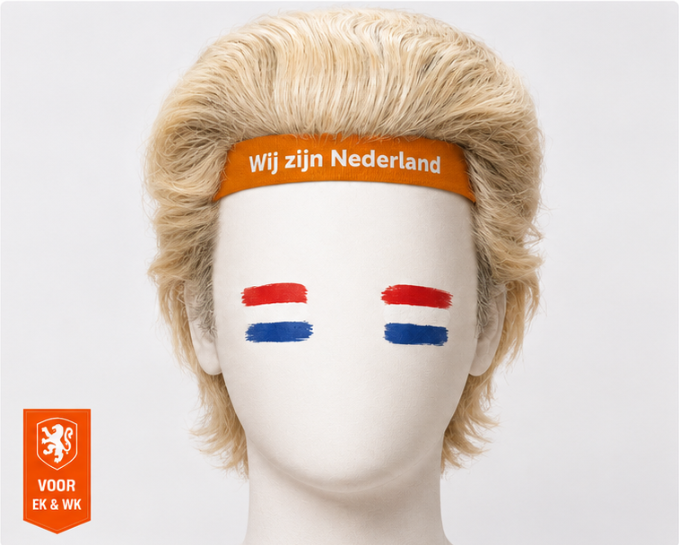

Voor EK & WK

Wilders Pruik - WK Editie
Iconisch haar. Legendarische sfeer. Voor echte Oranje supporters.
€19,95
Op voorraad
- Premium look met opvallende oranje hoofdband
- Lichtgewicht en comfortabel voor lange wedstrijddagen
- Perfect voor EK, WK, kroegavonden en groepsfoto's
- One size fits most, met speelse fanshop-uitstraling
1
Gratis verzending
vanaf €30
30 dagen
bedenktijd
Achteraf betalen
met Klarna-stijl flow
Live statistieken
- Paginaweergaven
- 0
- Kliks
- 0
- Video opens
- 0
- CTA kliks
- 0
Deze pagina bewaart basisstatistieken lokaal in je browser en stuurt events door naar `dataLayer` of `gtag()` wanneer analytics actief is.